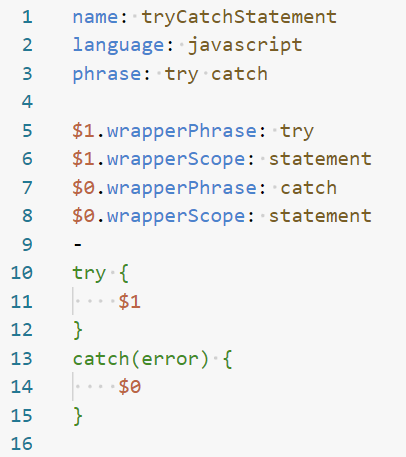
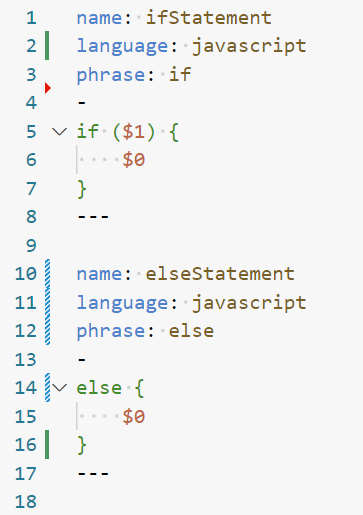
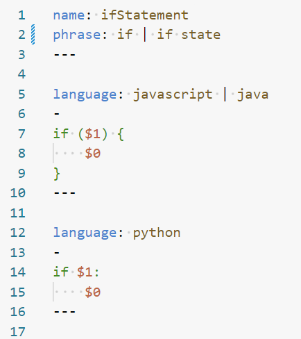

Snippets
Custom format to represent snippets.
Features
Custom file ending
.snippet.Supports syntax highlighting in VSCode via an extension
Supports auto-formatting in VSCode via an extension
Support for insertion and wrapper snippets. Note that while the snippet file syntax here supports wrapper snippets, you will need to install Cursorless for wrapper snippets to work. You’ll also need to add the following line to your
settings.talonfile:tag(): user.cursorless_use_community_snippetsNote that this line will also disable any Cursorless snippets defined in your Cursorless customization CSVs. You will need to migrate your Cursorless snippets to the new community snippet format described here. If you’d be interested in a tool to help with this migration, please leave a comment on cursorless-dev/cursorless#2149, ideally with a link to your custom snippets for us to look at.
Support for phrase formatters.
Format
- A
.snippetfile can contain multiple snippet documents separated by---. - Each snippet document has a context and body separated by
-. - Optionally a file can have a single context at the top with no body. This is not a snippet in itself, but default values to be inherited by the other snippet documents in the same file.
- Some context keys supports multiple values. These values are separated by
|.- For most keys like
languageorphrasemultiple values means or. You can use phrase 1 or phrase 2. The snippet is active in language A or language B. - For
insertionFormattermultiple values means that the formatters will be applied in sequence.
- For most keys like
Context fields
| Key | Required | Multiple values | Example |
|---|---|---|---|
| name | Yes | No | name: ifStatement |
| language | No | Yes | language: javascript \| java |
| phrase | No | Yes | phrase: if \| if state |
| insertionScope | No | Yes | insertionScope: statement |
Variables
It’s also possible to set configuration that applies to a specific tab stop ($0) or variable ($try):
| Key | Required | Multiple values | Example |
|---|---|---|---|
| insertionFormatter | No | Yes | $0.insertionFormatter: SNAKE_CASE |
| wrapperPhrase | No | Yes | $0.wrapperPhrase: try \| trying |
| wrapperScope | No | No | $0.wrapperScope: statement |
Formatting and syntax highlighting
To get formatting and syntax highlighting for .snippet files install andreas-talon
Examples
Single snippet definition

Multiple snippet definitions in single file

Default context and multiple values
